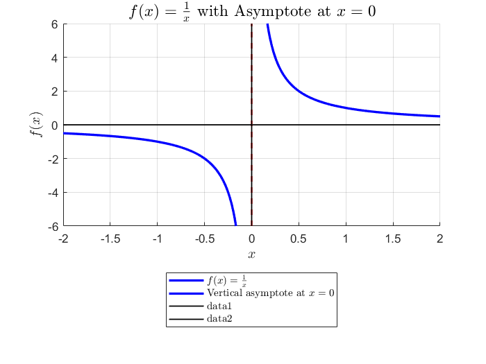
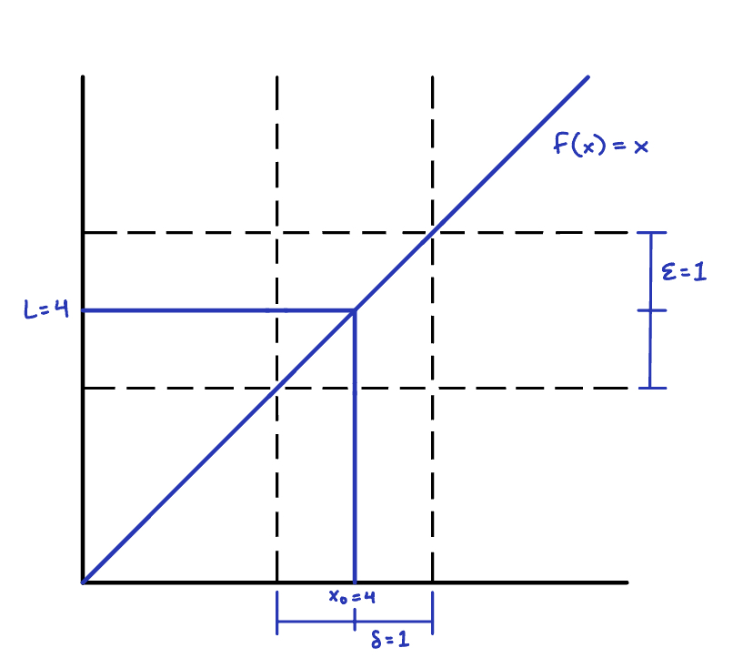
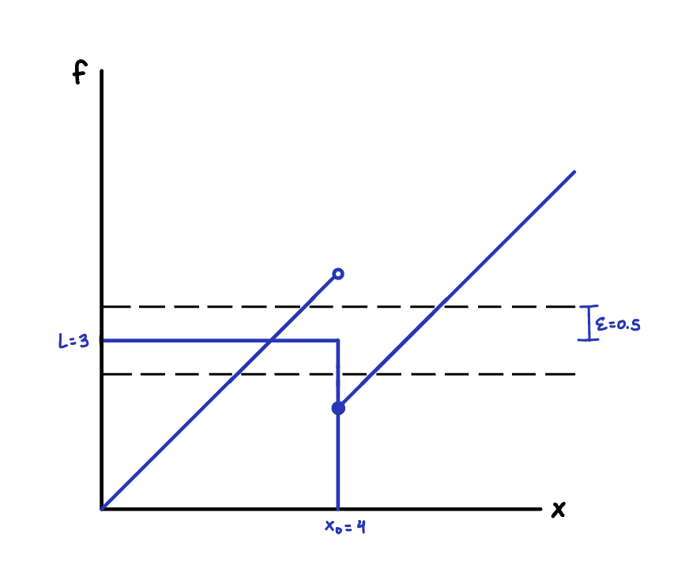
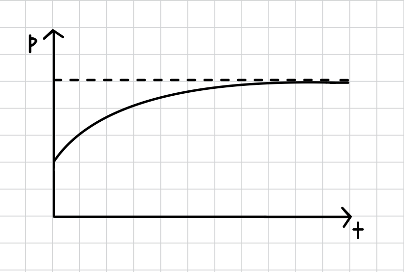
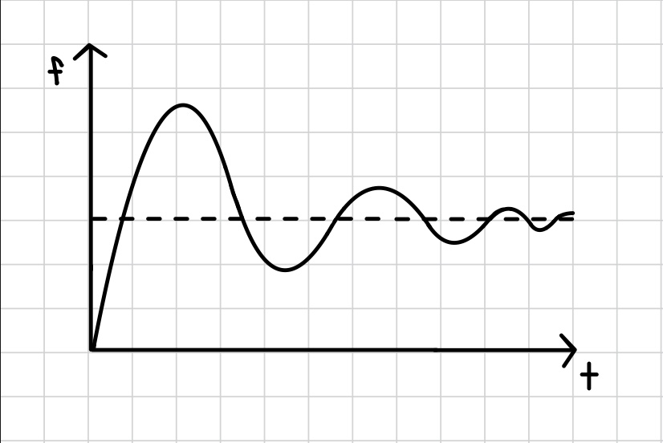
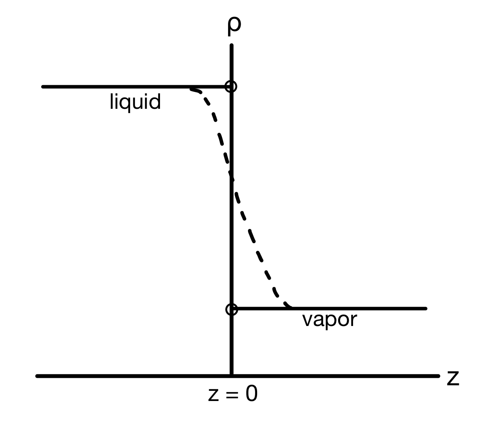
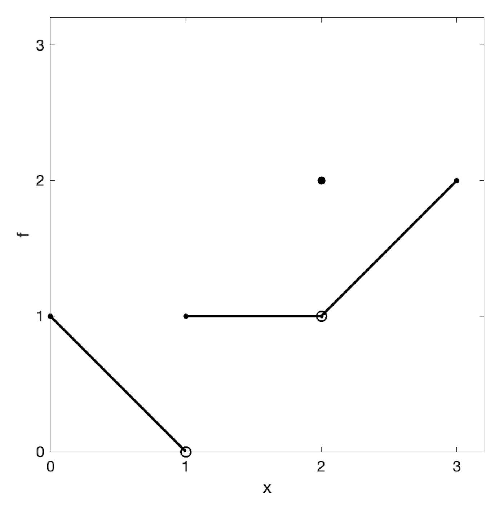

1.3. Limits#
1.3.1. Motivation#
What is the behavior of a function as its argument approaches a certain value? For example, what happens to a function near boundaries of its domain? Near “holes”? Under “extreme” cases, such as when something gets very small?
Some functions have limits. For example:
is not defined when \(x=1\). What happens to it near 1? First, let’s factor and simplify:
So, we expect that f should be well-behaved and have a value that approaches 2 as x approaches 1! Let’s verify numerically:
\(x\) |
\(f\) |
|---|---|
0.9 |
1.9 |
0.99 |
1.99 |
0.999 |
1.999 |
1.001 |
2.001 |
1.01 |
2.01 |
1.1 |
2.1 |
and also looking at a graph

However, some functions do not have limits. For example:
is not defined at \(x = 0\). As x approaches zero from the positive or negative side, the function “blows up” to \(\pm\infty\). The sign depends on whether x is positive or negative.
\(x\) |
\(f(x)\) |
|---|---|
0.1 |
10 |
0.01 |
100 |
-0.01 |
-100 |
-0.1 |
-10 |
This divergence is clear on a plot:
{kind=link}

We say that such a limit does not exist.
1.3.2. Formal definition#
\(\epsilon\) is a tolerance setting how close f needs to be to L. Given any \(\epsilon\), we need to find a “window” of x values within \(\delta\) of \(x_0\) so that f stays within \(\epsilon\) of L. For example, consider the following:
{kind=link}

Based on this plot, if \(\epsilon = 1\), \(3 < f < 5\) if \(3 < x < 5\) (i.e., \(\delta = 1\)). For a general \(\epsilon\), \(4 - \epsilon < f < 4 + \epsilon\) if \(4 - \delta < x < 4 + \delta\) or equivalently, \(|x-4| < \epsilon\). We hence identify \(\delta = \epsilon\) and have proven that
However, such a \(\delta\) cannot always be found for all \(\epsilon\) for certain functions! There, the limit does not exist. For example, consider
{kind=link}

Does the limit
exist? If \epsilon = 0.5, there is no \(\delta\) that contains f around \(x_0 = 4\). Therefore, this limit does not exsit
This math formalism is powerful, but clunky to apply. We will now move onto using rules (limit laws) that have been proven using them!
1.3.3. Limit laws#
There are some simple limits and rules for combining them that are convenient to know because they can be used to evaluate limits of more complicated functions:
Constant
(1.25)#\[\begin{equation} \lim_{x \to c} k = k \end{equation}\]Identity
(1.26)#\[\begin{equation} \lim_{x \to c} x = c \end{equation}\]Continuous function
(1.27)#\[\begin{equation} \lim_{x \to c} f(x) = f(c) \end{equation}\]if \(f(x)\) is continuous at x (no jumps or holes).
Sum
(1.28)#\[\begin{equation} \lim_{x \to c} \left(f(x) + g(x)\right) = \lim_{x \to c} f(x) + \lim_{x \to c} g(x) \end{equation}\]Difference
(1.29)#\[\begin{equation} \lim_{x \to c} \left(f(x) - g(x)\right) = \lim_{x \to c} f(x) - \lim_{x \to c} g(x) \end{equation}\]Product
(1.30)#\[\begin{equation} \lim_{x \to c} f(x)g(x) = \left(\lim_{x \to c} f(x)\right)\left(\lim_{x \to c} g(x)\right) \end{equation}\]Quotient
(1.31)#\[\begin{equation} \lim_{x \to c} \frac{f(x)}{g(x)} = \dfrac{\lim_{x \to c} f(x)}{\lim_{x \to c} g(x)} \end{equation}\]Power
(1.32)#\[\begin{equation} \lim_{x \to c} f(x)^{r/s} = \left(\lim_{x \to c} f(x)\right)^{r/s} \end{equation}\]where r and \(s \ne 0\) are integers. The limit of f must be positive if s is even.
1.3.4. Taking limits#
“Nice” functions can be evaluated directly
This works even if they are complicated
Limits are most useful when functions have “holes” (function is not defined at \(x_0\))
Note that this function had a “hole” at \(x = 1\) that we removed by factoring. This works even if the factors are “ugly”:
Here, we made use of the difference of squares identity:
Another useful trick is to multiply by a factor of “1” that makes a difference of squares (multiply by conjugate)
1.3.5. Limits at infinity#
How do functions behave when x gets “big”? For example, if the independent variable is time, the behavior after waiting a long time may be a “steady state”.
{kind=link}

This may represent, for example, a population with limited resources.
{kind=link}

This may represent, for example, the response of a servo or valve over time.
i.e., f gets close to L when x is “big”.
Some important limits at infinity:
\(\displaystyle\lim_{x \to \pm\infty} k = k\)
\(\displaystyle\lim_{x \to \pm\infty} \dfrac{1}{x} = 0\)
\(\displaystyle\lim_{x \to -\infty} e^x = 0\)
Other limit laws (sum, quotient, etc.) also hold at infinity! If function is already in a convenient form, use known limits to evaluate unknown ones. For example,
For rational functions \(f(x) = p(x) / q(x)\), divide by largest power of x in denominator:
Not all functions have limits at infinity. Some “blow up”!
This limit does not exist. A helpful shortcut for rational polynomials: check coefficients of highest powers in numerator and denominator!
1.3.6. One-sided limits#
How do functions behave as you approach a point \(x_0\) from a direction? One physical example of this is an old question in statistical mechanics: when you have vapor-liquid phase coexistence, does the density change stepwise or continuously at the interface?
{kind=link}

If the density as a function of distance from the interface is \(\rho(z)\), the liquid density can be denoted as \(\lim_{z \to 0^-} \rho(z)\), while the vapor density can be denoted as \(\lim_{z \to 0^+} \rho(z)\).
For example, if
We see that \(\lim_{x \to 0^+} f(x) = 1\) (the value from the right), while \(\lim_{x \to 0^-} f(x) = -1\) (the value from the left). Thus, \(\lim_{x \to 0} f(x)\) does not exist.
Normal limit laws also still apply to one-sided limits:
However, be careful about which piece of the function applies:
where we used the limit we already found of \(f(x) = |x|/x\) above to evaluate the second limit.
Example: One-sided limit challenge
Using
{kind=link}

Find the limits at \(x = 1\) and \(x = 2\).
From the graph, \(\lim_{x \to 1^-} f(x) = 0\) and \(\lim_{x \to 1^+} f(x) = 1\), so \(\lim_{x \to 1} f(x)\) does not exist.
However, \(\lim_{x \to 2^-} f(x) = 1\) and \(\lim_{x \to 2^+} f(x) = 1\), so \(\lim_{x \to 2} f(x) = 1\), even though \(f(2) = 2\).
1.3.7. Infinite limits#
Some functions tend to \(\pm\infty\) at a value, even if they do not have a limit.
{kind=link}
{kind=link}
This behavior can be used to define a vertical asymptote of a function:
1.3.8. L’Hôpital’s Rule#
Note
This technique requires you to be comfortable with taking derivatives. Come back to it later if you need to study that first!
L’Hôpital’s rule is a method that allows you to calculate limits of certain indeterminate forms using derivatives.
Let’s work some examples:
\(\displaystyle \lim_{x\to 0} \frac{\sin x}{x}\)
Solution
The limits of the numerator and denominator are both zero, so:
(1.53)#\[\begin{equation} \lim_{x\to 0} \frac{\sin x}{x} = \lim_{x\to 0} \frac{\cos x}{1} = 1 \end{equation}\]\(\displaystyle \lim_{x\to 0} \frac{x-\sin x}{x^3}\)
Solution
The limits of the numerator and denominator are both zero, so:
(1.54)#\[\begin{align} \lim_{x\to 0} \frac{x-\sin x}{x^3} &= \lim_{x\to 0} \frac{1-\cos x}{3x^2} \\ &= \lim_{x\to 0} \frac{\sin x}{6x} \\ &= \frac{1}{6} \lim_{x\to 0} \frac{\sin x}{x} = \frac{1}{6} \end{align}\]where we used L’Hôpital’s rule twice, then used the result from the first example.
\(\displaystyle \lim_{x\to \infty} \frac{\ln(x)}{2\sqrt{x}}\)
Solution
The limits of the numerator and denominator are both \(\infty\), so:
(1.55)#\[\begin{align} \lim_{x\to \infty} \frac{\ln x}{2\sqrt{x}} &= \lim_{x\to \infty} \frac{1/x}{1/\sqrt{x}} \\ &= \lim_{x\to \infty} \frac{1}{\sqrt{x}} = 0 \end{align}\]where the last limit is obtained by simplification.
\(\displaystyle \lim_{x\to \infty} \frac{e^x}{x^2}\)
Solution
The limits of the numerator and denominator are both \(\infty\), so:
(1.56)#\[\begin{align} \lim_{x\to \infty} \frac{e^x}{x^2} &= \lim_{x\to \infty} \frac{e^x}{2x} \\ &= \lim_{x\to \infty} \frac{e^x}{2} = \infty \end{align}\]Here, we used L’Hôpital’s rule twice, but then ultimately found that the limit does not exist.
\(\displaystyle \lim_{x\to \infty} x\sin(1/x)\)
Solution
This limit is not in a form that’s immediately suitable for L’Hôpital’s rule, but it can be made so.
(1.57)#\[\begin{align} \lim_{x\to \infty} x\sin(1/x) &= \lim_{x\to \infty} \frac{\sin(1/x)}{1/x} \\ &= \lim_{x\to \infty} \frac{\cos(1/x)(-1/x^2)}{-1/x^2} \\ &= \lim_{x\to \infty} \cos(1/x) = 1 \end{align}\]Another option in this case would be to substitute in \(y = 1/x\), then note that \(y \to 0\) as \(x \to \infty\) so we have
(1.58)#\[\begin{equation} \lim_{y\to 0} \frac{\sin y}{y} = 1 \end{equation}\]which we already solved!